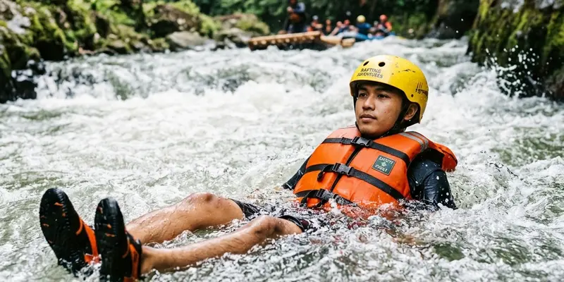

Waktu terbaik melakukan rafting Kaliwatu umumnya berada pada pagi hingga siang hari saat musim kemarau, karena kondisi cuaca lebih cerah dan debit air sungai cenderung lebih stabil dibanding musim hujan.
Ringkasan Inti
- Rafting Kaliwatu buka setiap hari mulai pukul 08.00 hingga 17.00 WIB.
- Pagi hingga siang hari umumnya menjadi waktu yang lebih nyaman untuk memulai rafting.
- Musim kemarau cenderung menghadirkan debit air yang lebih stabil dibanding musim hujan.
- Musim hujan dapat membuat arus sungai menjadi lebih deras dan kurang terprediksi.
- Merencanakan waktu kunjungan sejak awal membantu pengalaman rafting berjalan lebih nyaman.
Kapan Waktu Terbaik Melakukan Rafting Kaliwatu?
Waktu terbaik melakukan rafting Kaliwatu umumnya berada pada pagi hingga siang hari, karena kondisi cuaca yang lebih cerah pada jam tersebut memberikan kenyamanan tambahan bagi peserta selama menyusuri Sungai Brantas.
Selain waktu dalam sehari, musim kemarau juga sering dianggap sebagai periode yang lebih ideal untuk rafting Kaliwatu, karena debit air sungai cenderung lebih stabil dan dapat diprediksi dibanding kondisi pada musim hujan.
Apakah Musim Hujan Memengaruhi Kegiatan Rafting Kaliwatu?
Musim hujan dapat memengaruhi kegiatan rafting Kaliwatu karena debit air sungai berpotensi meningkat secara signifikan, sehingga arus menjadi lebih deras dan kurang terprediksi dibanding kondisi normal pada musim kemarau.
Pada kondisi cuaca ekstrem seperti hujan deras, pengelola rafting Kaliwatu umumnya akan mempertimbangkan penundaan atau pembatalan sementara kegiatan demi keselamatan peserta, sehingga wisatawan disarankan mengecek kondisi cuaca dan menghubungi pengelola sebelum berangkat pada musim hujan.

Suasana pagi hari yang cerah saat peserta memulai aktivitas rafting Kaliwatu Kota Batu.
Jam Berapa Rafting Kaliwatu Buka untuk Pengunjung Setiap Harinya?
Rafting Kaliwatu buka setiap hari mulai pukul 08.00 hingga 17.00 WIB, termasuk pada akhir pekan dan hari libur, sehingga wisatawan memiliki fleksibilitas untuk memilih jadwal kunjungan sesuai waktu luang yang tersedia.
Meski demikian, wisatawan yang berencana datang dalam rombongan besar disarankan melakukan reservasi terlebih dahulu, mengingat jadwal keberangkatan rafting biasanya diatur secara bergiliran untuk memastikan keamanan dan kenyamanan setiap kelompok peserta.
Bagaimana Cara Mengecek Kondisi Sungai Sebelum Berangkat Rafting?
Cara mengecek kondisi sungai sebelum berangkat rafting adalah dengan menghubungi langsung pengelola rafting Kaliwatu untuk menanyakan kondisi debit air terkini, terutama apabila kunjungan direncanakan pada musim hujan atau setelah terjadi hujan deras di kawasan hulu sungai.
Wisatawan juga disarankan memantau perkiraan cuaca beberapa hari sebelum jadwal kunjungan, agar dapat menyesuaikan rencana perjalanan apabila kondisi cuaca diperkirakan kurang mendukung untuk kegiatan rafting pada tanggal yang telah direncanakan.
Apa Manfaat Merencanakan Waktu Kunjungan Rafting Kaliwatu Sejak Awal?
Manfaat merencanakan waktu kunjungan rafting Kaliwatu sejak awal adalah memastikan ketersediaan jadwal keberangkatan, terutama pada akhir pekan atau musim liburan yang biasanya lebih ramai pengunjung dibanding hari kerja biasa.
Perencanaan yang matang juga membantu wisatawan mempersiapkan perlengkapan yang sesuai dengan kondisi cuaca pada waktu kunjungan, sehingga pengalaman rafting Kaliwatu dapat berjalan lebih nyaman tanpa kendala teknis yang seharusnya dapat diantisipasi sejak awal.
Kesimpulan
Waktu terbaik melakukan rafting Kaliwatu umumnya berada pada pagi hingga siang hari di musim kemarau, ketika kondisi cuaca dan debit air sungai cenderung lebih stabil. Mengecek kondisi cuaca dan melakukan reservasi sejak awal akan membantu wisatawan mendapatkan pengalaman rafting yang lebih nyaman dan aman.
Pertanyaan yang Sering Diajukan
Sebaiknya memulai pada pagi hingga siang hari, mengingat kondisi cuaca yang lebih cerah dan operasional yang berlangsung mulai pukul 08.00 hingga 17.00 WIB.
Rafting Kaliwatu umumnya tetap buka, namun kegiatan dapat ditunda sementara pada kondisi cuaca ekstrem demi keselamatan peserta.
Reservasi disarankan terutama untuk rombongan besar, agar jadwal keberangkatan dapat diatur dengan lebih pasti oleh pengelola.